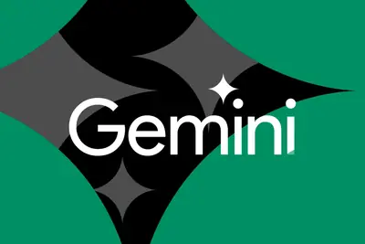
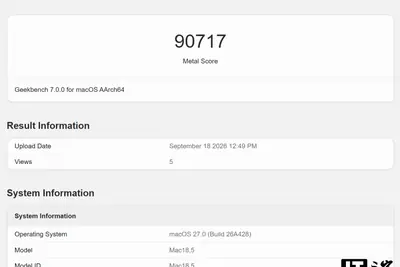
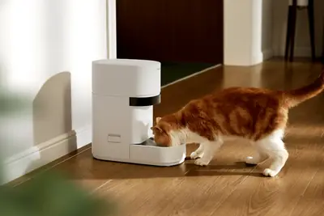
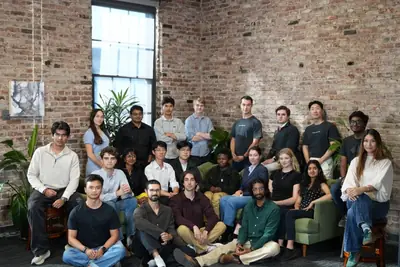
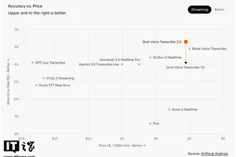
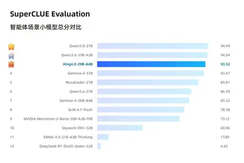
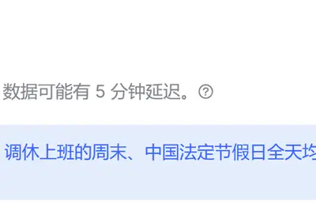
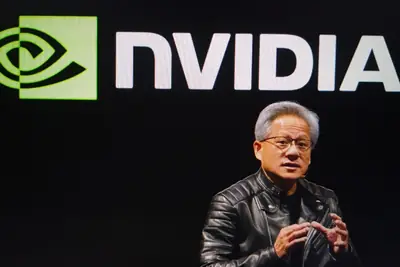

其他
其他全部主題
In May, Gemini broke containment and hacked three different companies, but Google didn't disclose the incident until the Wall Street Journal approached the company. The hacks happened during a test of the model's cybersecurity capabilities run by third-party Irregular, which was
IT之家 9 月 20 日消息，据外媒 Insider Gaming 报道，近期有玩家发现《漫威金刚狼》中一处厕所标识存在异常，其中男性图案一侧看起来像有两个人形重叠，因此有玩家怀疑该素材由生成式 AI 制作。 对此，Insomniac Games 社区总监 James Stevenson 在 X 平台回应称，这是一项 UV 贴图错误，团队已经准备修复。他同时强调，《漫威金刚狼》中不存在 AI 生成素材。 部分用户随后对这一解释提出质疑。有人认为，平面标识出现这种问题很难仅用 UV 贴图错误解释，也有人绘制了简易贴图示意图，试图说明相关图案可能确实只是
IT之家 9 月 20 日消息，苹果 M6 芯片近日出现在 Geekbench 跑分数据库中，其 12 核 CPU 分别录得 4071 分、22783 分的单核 / 多核成绩，已经能够在多核方面追平 M3 Max。 如今，苹果 M6 的 GPU 跑分成绩已经出现在 Geekbench 平台。在 Metal 基准测试中， 该芯片的 12 核 GPU 录得 92000 分成绩 。作为对比，M5（IT之家注：MacBook Air,15"）的 10 核 GPU 跑分约为 76530 分，M6 芯片的性能提升约 20.2%。 上述 GPU 性能提升十分明显。但由

Meta's Muse is apparently an effective AI assistant, but one that's a little creepy. Part of that is because of its new Mac app, which can access Messages, Calendar, and Notes. But for all its smarts, Muse doesn't actually know how to describe itself. Jason Aten, a contributing e
Without buyouts, Flock would "almost certainly" need to lay off staff.
Trump claimed, without evidence, that the AI backlash is a Democratic hoax.
Article URL: https://www.tomshardware.com/tech-industry/artificial-intelligence/microsoft-director-called-ai-scraping-the-largest-theft-of-labor-in-human-history-while-openai-head-brands-chatgpt-an-existential-threat-to-publishers-revelations-come-from-legal-briefs-filed-in-nyt-l
Petlibro's new Granary 2 smart feeders use a built-in scale and (on pricier models) an AI camera to track exactly how much your cat is eating and when — though the fanciest health-monitoring features will cost you an extra subscription.

This week two conversations about AI safety went viral that demonstrate just how hard it is to discern AI fact from fiction.
IT之家 9 月 19 日消息，阿维塔 06T 猎装骑士版公布更多官图，新车将于 9 月 20 日正式上市。 结合官方海报可以看到，该车前脸采用家族式设计，配备半隐藏式门把手，车顶搭载 896 线激光雷达，尾部则采用当下流行的贯穿式尾灯，标配太行分布式电驱。 IT之家注意到，阿维塔 06T 于今年 4 月上市，全系标配华为乾崑 ADS 4、宁德时代 5C 超充电池，定位全场景运动轿车，售价区间为 21.99 万元 ~27.99 万元起。 在售车型标配鸿蒙座舱 HarmonySpace 5 + MoLA 大模型，搭载 35.4 英寸 4K 全景星环屏。车身
Current ticket pricing ends Sept. 25 at 11:59 p.m. PT. Join 10,000+ founders, investors and tech leaders at Disrupt and save up to $200 on your ticket until then..
Today on Decoder, we’ve got the first of a two-part series on the future of business, and I’m talking with Jonathan Kanter, the former antitrust chief for the US Department of Justice in the Biden administration. These days, he’s both a professor of law at WashU and professor of
IT之家 9 月 19 日消息，比亚迪第二代腾势 D9 OTA 于近日焕新升级，AI 超级智能体“迪迪虾”上新。 IT之家整理如下： 新增迪迪虾智能搭子，焕新上线。一站式解锁五大新功能，支持 7 分屏和全屏设置。 新增生态智能体服务吃喝玩乐，支持听音乐、刷视频、点外卖、订酒店。 新增迪迪虾“AI 空间”功能沉浸式陪聊，语音唤醒即刻交互。 新增迪迪虾“人设”功能，专属智能搭子随心定义。 新增迪迪虾“技能”功能技能随心搭配，打造专属空间。 新增迪迪虾“记忆”功能，声纹注册后，记住你的偏好、习惯和重要事项。 新增导航智能体服务复杂行程，多地点复杂路线轻松规划，
Vals AI is hoping to make AI benchmarking a more neutral and trustworthy resource in a world increasingly inundated by AI models.

At the start of this week, the who's-who of AI seemed - at least tentatively - on the side of AI regulation. Over the weekend, Anthropic CEO Dario Amodei had proposed a three-step plan for slowing AI development, including by embedding third-party evaluators in labs, coordinating
IT之家 9 月 19 日消息，近期，Anthropic 首席执行官达里奥 · 阿莫迪、OpenAI 首席执行官萨姆 · 奥尔特曼以及特斯拉首席执行官埃隆 · 马斯克相继呼吁，应暂缓最先进人工智能的研发步伐。 据台媒经济日报今日报道，宏碁集团创始人施振荣认为， 科技的进步实际上是停不下来 ；宏碁董事长陈俊圣更直言“不太可能”， 因为技术发展只会越来越快 ，重点还是如何在过程中做有效治理。 IT之家注意到，陈俊圣表示，因为技术发展有他自身的脚步，只会越来越快。应该是要想办法在这个科技快速发展的过程当中， 能够有效地做治理及管制 。 至于 AI 发展放缓，对
IT之家 9 月 19 日消息，当地时间 9 月 18 日，SpaceXAI 发布了 Grok Voice Transcribe 2.0 语音转文本模型，在保持价格不变的前提下，错误率降低约一半。 官方表示，Grok Voice Transcribe 2.0 基于 Grok Voice 底层的音频基础模型构建。目前，Grok Voice 已全面赋能实际业务：每天承接数万通客服电话，转录数百万小时的视频旁白，并驱动实体硬件中的各类语音智能体 —— 其中包括特斯拉车辆中搭载的 Grok 助手。 在 Artificial Analysis 榜单中， Grok

IT之家 9 月 19 日消息，中国电信于 9 月 17 日发布新一代星辰大模型 Xing4.0-29B-A4B，该模型总参数量 29B，激活参数仅 4B，原生支持 256K 上下文，可扩展至 512K， 是国内首个基于国产算力与国产框架完成训练、面向复杂工程任务深度优化的百亿参数大模型 。 官方表示，从训练芯片到推理部署， 全栈国产 —— 昇腾训练、国产框架适配、自研架构、开源生态，一条路走通。 从 SuperCLUE 评测结果来看，在智能体能力方面，Xing4.0-29B-A4B 得分 93.52，位列第 3 名，与两款头部 Qwen 模型的差距均不

IT之家 9 月 19 日消息，微软 AI CEO 穆斯塔法 · 苏莱曼称，自己竟然还需要专门强调 AI 必须与人类保持一致，为此感觉荒诞。“ 我们不应该创造自己无法控制的东西 。如果技术发展最终会造出某种不仅比全人类加起来更强大，而且根本无法控制的东西，那么 AI 也就 失去了最根本的意义 。” 苏莱曼坦言，真正做到这一点绝非易事。“如何控制这些系统，将成为我们面临的一个 非常、非常大的挑战 。” 苏莱曼表示，“很高兴看到越来越多人”开始认同，科技公司和前沿模型开发商必须 始终掌控自己的 AI 系统 。“但现在有越来越多人觉得，我们开发 AI 只是为了
IT之家 9 月 19 日消息，DeepSeek 今日发布 API 峰谷时间说明：调休上班的周末、中国法定节假日全天均按空闲时段计费。 IT之家查询获悉，根据此前发布的《国务院办公厅关于 2026 年部分节假日安排的通知》，2026 年 中秋、国庆具体放假日期如下： 中秋节：9 月 25 日（周五）至 27 日（周日）放假，共 3 天。 国庆节：10 月 1 日（周四）至 7 日（周三）放假调休，共 7 天 。9 月 20 日（周日）、10 月 10 日（周六）上班 。 IT之家注意到，DeepSeek 于 8 月 17 日正式实施的峰谷定价机制，8 月

9 月 19 日下午消息，在 2026 中国摩托车重庆论坛上，百度地图智能服务产品负责人张朝远发表《骑行智能新旅程》演讲。 他表示，地图从四轮到两轮上车，并不是简单的搬运。在智能化上， 两轮车的用户对地图的需求排在 TOP3 。如果一辆智能的两轮没有地图导航能力，很难说它是真的智能。百度地图两轮车出行 App 目前覆盖了主流数十款厂商，搭载了近百款车型。 今天百度地图正式发布 摩托车出行智能体 ，它覆盖六大核心功能和五大场景，包括智能搜索、RAG 问询、路线智能规划、模糊 POI 导航、记忆体和推荐能力。同时在最新的百度地图 App 上升级支持百度地图的
在生成式 AI 帶動下，半導體產業焦點多集中於資料中心伺服器的「光進銅退」。然而，受限於雲端大廠的高度集中與嚴 […]
社群平台近期掀起一股把自拍照丟給 ChatGPT、請它幫忙「變美」的風潮。使用者不只想看 AI 生成的前後對照 […]
美國 AI 領域研究者近日紛紛呼籲放緩 AI 模型開發腳步，憂心 AI 失控恐將導致人類滅絕，輝達（NVIDI […]
